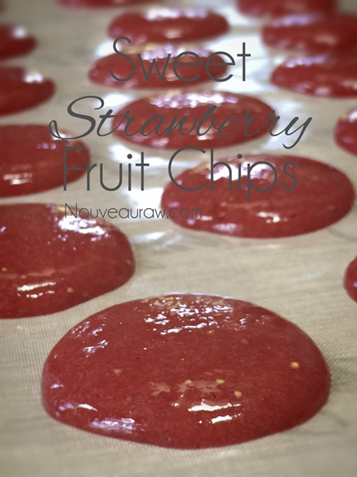
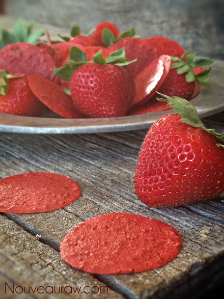

Sweet Strawberry Chips

~ raw, vegan, gluten-free, nut-free ~
This “recipe” that I am sharing today is about as simple as they come. On Facebook, I asked everyone for some ideas on what to make with some fresh strawberries that I had picked earlier that day. It was suggested that I make strawberry chips… something easy! Well, here it is.
Some might frown how simple strawberry chips are but there is nothing greater than food in its purest form. And I didn’t want to take it far from its natural state. These chips remind me of wafers, thin-paper-like. Don’t expect them to be cracker crunchy just expect them to be delicious. :)
There is something special about being able to pick your own food. Whether it is from your own garden, your friends’ or even a U-pick-it farm. If for some reason none of those options are available to you… even “picking” the perfect strawberries in the grocery store can be rewarding.
If you can, however, pick your own strawberries there are a few pointers that I thought I would share. First of all the time of day that you pick them matters. If you plan on eating them right away, you can pick any time of the day. If you can’t get to using them for a few days or so, you should pick strawberries in the cooler part of the day. Picking strawberries in the heat of the day will result in them softening and spoiling more rapidly.
Berry Picking Etiquette…
Just as there is table etiquette, there is berry picking etiquette. I have a PHD in strawberries…. Pretty Heavy Diet… of strawberries that is, so listen up. :) But seriously, we need to be thankful and respectful of the foods that we eat. So let’s start with being careful that your feet and knees do not damage the surrounding plants or berries in or along the edge of the row…. you don’t want to be caught with a squished berry on your knee cap, that would just be a disgrace.
Now it is time to remove the strawberry from the plant. Don’t hap hazzardly reach in and pluck them blindly. We much approach them gently. And remember, the ole’ phrase “bigger is better” doesn’t necessarily work here, small berries tend to have more flavor. Select plump, firm, fully red berries by grasping the stem just above the berry between the forefinger and the thumbnail and pull with a slight twisting motion allowing the berry to roll into the palm of your hand. We won’t be practicing our berry-hoop-shots during this time. You want to place the strawberry in the bucket with grace and ease. Tossing and even piling the bucket high with too many strawberries can cause bruising. Oh, and don’t pick unripe berries, they won’t ripen once picked.
Once picked, strawberries should be kept cool and out of the sun. When you get them home, do not clean them until just before you use them. Store the berries uncovered in the fridge in a shallow container. When you are ready to use the berries, wash them quickly in cold water. Do not let them soak. I lay mine out on a paper towel or dish towel and pat them dry. Well, I think that is a pretty good start on your strawberry etiquette.
- 3 cups diced strawberries
- 2 tsp lemon juice
- 1 tsp vanilla extract
- 1/8 tsp Himalayan pink salt
- sweetener if needed
Preparation:
- Wash and destem the strawberries. Place in the blender.
- Add lemon juice, vanilla, and salt. Blend until creamy smooth. Taste test. Add sweetener if needed. Strawberries vary in sweetness and tartness.
- With a teaspoon measuring spoon, scoop up some batter and pour onto a telfex sheet that comes with a dehydrator. Let gravity spread the chips.
- Repeat this process until all the batter is used up.
- Dehydrate at 115 degrees (F) for 8-10 hours or until dry. They will be very thin and a little flexible.
- Store in an airtight container and store on the counter top.
The Institute of Culinary Ingredients:
- What is Himalayan pink salt and does it really matter? Click (here) to read more about it.


© AmieSue.com